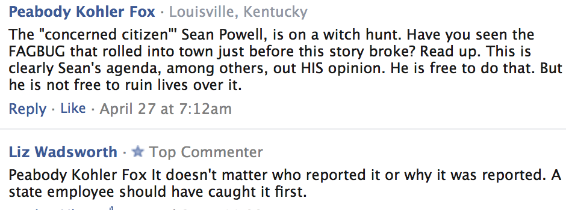

< < < Back
Did SJWs Sean Powell And Jocelyn Galvano-Pickett Help Get A Vermont State Trooper Fired? (UPDATE 2) – Return Of Kings
Last month, Vermont State Police trooper Jonathan Graham was forced to resign from his job after several “offensive” Facebook posts he made were anonymously reported to his superiors. The Facebook posts in question included jokes about male-to-female transsexual Bruce Jenner as well as supposedly “anti-Muslim” statements. In a letter to the Rutland Herald, Graham’s daughter criticized his forced resignation as “too harsh a punishment” and also explained that their family will be going through hard financial times as a result:
If this can happen to my dad, it can happen to anyone. We now live in a country where stalking police officers on the Internet for “damning” political views is the norm, and any bored media outlet turns it into a circus. Is political correctness worth putting a family through this?
Return of Kings has obtained the names of the anonymous cowards who appear to have ratted Graham out: Sean Powell, a homosexual SJW and IT specialist from Randolph, and Jocelyn Galvano-Pickett, an employee of the state court system in the area where Graham was stationed. Our research combined with interviews of acquaintances of theirs show that Powell and Galvano-Pickett are a pair of disturbed trolls seeking to ruin the lives of anyone who isn’t as left-wing as they are.
As a public service, Return of Kings is yanking the curtain away to reveal the demented SJWs pulling the levers. Sean Powell and Jocelyn Galvano-Pickett are degenerate, fanatical ideologues who teamed up to agitate for a man’s firing because he hurt their feelings. By all accounts, Jonathan Graham was an upstanding member of the Vermont State Police and his forced resignation is an injustice that must be rectified.
How Sean Powell And Jocelyn Galvano-Pickett Ruined A Man’s Life
While we don’t have a smoking gun proving that Powell and Galvano-Pickett were behind Graham’s resignation, we have considerable circumstantial evidence pointing to their involvement. The two of them are top Facebook commenters on all of Vermont’s major local news sites, indicating that they troll Facebook looking to cause trouble and enforce their leftist viewpoints on everyone else. This article from The Vermont Political Observer, a left-wing political blog, heavily implies that the author knows who snitched on Graham.
Additionally, several tipsters provided Return of Kings with incriminating screenshots of Powell and Galvano-Pickett’s Facebook activity. In this first screencap, taken from a news article about Graham, Galvano-Pickett informed Powell that she sent him a private message, an unusual thing to do on a publically viewable comment thread. The two of them also display their SJW bona fides in agitating for Graham’s removal even before his superiors took action:

In this second screenshot, commenter Peabody Kohler Fox’s remarks to Sean Powell imply that she has inside knowledge that Powell is the one who ratted Graham out:

This next screenshot shows Galvano-Pickett demanding for Graham’s firing while the investigation into his Facebook activities was still undergoing:

Finally, this last screenshot shows that Galvano-Pickett has no problem with doxing anyone she disagrees with, even if it results in them losing their job:

Further research into Sean Powell and Jocelyn Galvano-Pickett suggests they are a pair of trolls with nothing better to do than snitch on anyone whom they deem “racist” or “homophobic.” Powell maintains a blog called Sean’s Vermont Tech Blog, and both it and his linked Google+ profile suggest he is a professional whiner who runs around the Internet creating drama. For example, in this Google+ post, Powell complains about being banned from a discussion group.
In the case of Jocelyn Galvano-Pickett, she appears to have absolutely no life beyond arguing politics online. Virtually every news article from a Vermont-based media outlet has at least one comment from her. She is also an aspiring poet, scribbling doggerel such as this and posting it to poetry sites.
Pay No Attention To The Crybabies Behind The Curtain
It’s an accepted fact that the kinds of Puritans who agitate for people to be fired for their political views are failures with nothing going for them in life. The lives of quiet desperation that Sean Powell and Jocelyn Galvano-Pickett lead are a prime example of this. These two trolls have no accomplishments to speak of, so they spend their free time stalking and ruining those who actually have something to be proud of.
Every bit of public info about Jonathan Graham suggests that he was a hard-working and well-respected member of the Vermont State Police. His only crime was having opinions and making jokes that these self-appointed commissars found “bigoted.” Because of their hurt feelings, Graham is now jobless and his family is looking at grinding poverty, perhaps worse. Both Powell and Galvano-Pickett have committed an unspeakably evil act.
If there is any justice in America, Graham will either be restored to his job as a Vermont state trooper or able to find another position in law enforcement. As for Sean Powell and Jocelyn Galvano-Pickett, they need to be publicly shamed and punished for what they’ve done.
Update (5/21/2015)
A tipster has provided more evidence that Sean Powell was the one who ratted out Jonathan Graham. This screenshot shows that Peabody Kohler Fox had inside information pertaining to Powell’s activities:

This is as close to a smoking gun as we are likely going to find. This screenshot suggests that it was not a fellow trooper who reported Graham, but was in fact Sean Powell.
Update (5/22/2015)
The commenter “Brian Ritchason” leaving angry remarks on this article is in fact Sean Powell himself. My evidence for this is that “Ritchason” is commenting with the email sburke05079+facebook [at] gmail [dot] com:

“Burke” was Powell’s last name before he got married, as evidenced by this post from his blog:
“Ritchason” has repeatedly argued that it was a “fellow trooper” who reported Graham, but the revelation that “Ritchason” is actually Powell is as good an admission of guilt as we’re going to get.
Read More: How To Survive A Modern Day Witch-Hunt


{kind=link}